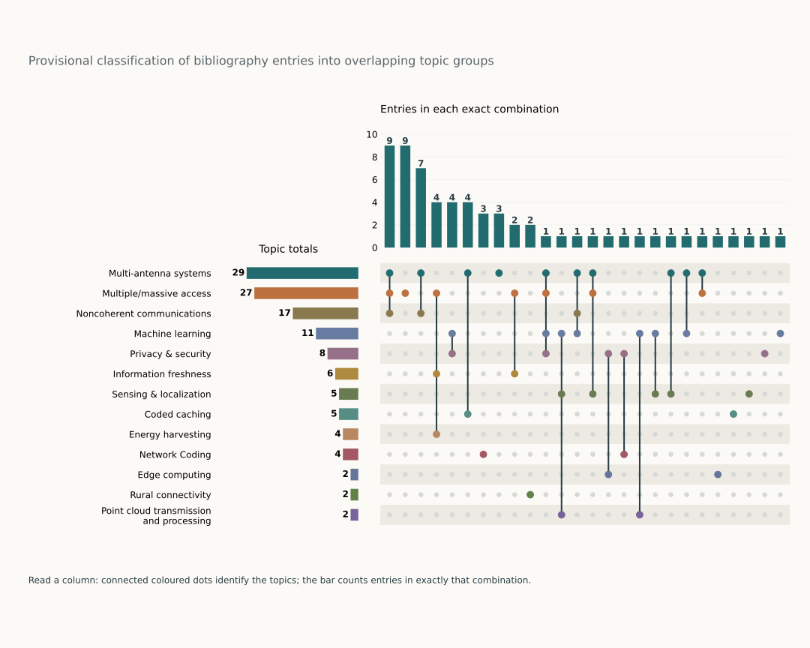

Publication record.
How my publications overlap

Preprints / Submitted 4
- [Pre1]M. Lassila, J. Östman, K.-H. Ngo, and A. Graell i Amat, “Hierarchical Bayesian Membership Inference: A General Framework with Applications to Diffusion Models,” Submitted to Proc. Int. Conf. Learn. Represent. (ICLR), 2027.
- [Pre2]J. Östman, M. Lassila, K.-H. Ngo, and A. Graell i Amat, “Predictive Geometry in Language Models,” Submitted to Proc. Int. Conf. Learn. Represent. (ICLR), 2027.
- [Pre3]S. Liu, G. Bazard, K.-H. Ngo, and P.-E. Forssén, “Point Cloud Transmission With Patch-Based Rate Adaptation,” Submitted to Proc. IEEE Int. Conf. Commun. (ICC), Washington, DC, USA, 2027.
- [Pre4]A. Lancho, K.-H. Ngo, S. Rini, R. Oliver, and R. Vazquez-Alvarez, “Charting the Path to Bifröst: The 2026 ESIT Data-to-Information Competition on Robust CSI-Based Localization and Machine Unlearning,” Submitted to IEEE BITS Inf. Theory Mag., 2026.
Books 1
- [B1]N. L. Trung, V. N. Q. Bao, N. V. Ha, L. V. Ha, K.-H. Ngo, et al., “Two-way relay communications: theory and implementation,” Vietnam National University Publishing House, Hanoi, Vietnam, 2025, Language: Vietnamese.
Patents 1
- [P1]K.-H. Ngo, A. Decurninge, M. Guillaud, and S. Yang, “Transmitter and Receiver Communication Apparatus for Non-Coherent Communication,” U.S. Patent 17/243,679, 2021-08-19.
Journal Papers 15
- [J1]J.-F. Chamberland, K. Narayanan, K.-H. Ngo, G. Durisi, V. T. Kunde, and C. S. K. Valmeekam, “Prediction-Based Compression Using Large Language Models,” IEEE BITS Inf. Theory Mag., Aug. 2026, Early Access.
- [J2]K. Okumus, K.-H. Ngo, G. Durisi, and E. G. Ström, “Type-based unsourced multiple access over fading channels in distributed MIMO with application to multi-target localization,” IEEE Trans. Wireless Commun., pp. 22339–22353, 2026.
- [J3]K.-H. Ngo and E. G. Larsson, “Distributed MIMO With Over-the-Air Phase Calibration Integrated Into the TDD Flow,” IEEE Trans. Wireless Commun., vol. 25, pp. 17463–17478, 2026.
- [J4]K.-H. Ngo, D. Cuevas, R. de Miguel Gil, V. Monzon Baeza, A. Garcia Armada, and I. Santamaria, “Noncoherent MIMO Communications: Theoretical Foundation, Design Approaches, and Future Challenges,” IEEE Open J. Veh. Technol., pp. 381–401, 2026.
- [J5]K.-H. Ngo, G. Durisi, A. Munari, F. Lázaro, and A. Graell i Amat, “Timely Status Updates in Slotted ALOHA Networks With Energy Harvesting,” IEEE Trans. Commun., vol. 73, no. 9, pp. 7288–7303, Sep. 2025.
- [J6]K.-H. Ngo, G. Durisi, A. Graell i Amat, P. Popovski, A. E. Kalor, and B. Soret, “Unsourced Multiple Access with Common Alarm Messages: Network Slicing for Massive and Critical IoT,” IEEE Trans. Commun., vol. 72, no. 2, pp. 907–923, Feb. 2024.
- [J7]K.-H. Ngo, A. Lancho, G. Durisi, and A. Graell i Amat, “Unsourced Multiple Access with Random User Activity,” IEEE Trans. Inf. Theory, vol. 69, no. 7, pp. 4537–4558, Feb. 2023.
- [J8]F. Zhang, K.-H. Ngo, S. Yang, and A. Nosratinia, “Transmit Correlation Diversity: Generalization, New Techniques, and Improved Bounds,” IEEE Trans. Inf. Theory, vol. 68, no. 6, pp. 3841–3869, Jan. 2022, (Zhang and Ngo contributed equally to the technical content).
- [J9]K.-H. Ngo, S. Yang, M. Guillaud, and A. Decurninge, “Joint Constellation Design for Noncoherent MIMO Multiple-Access Channels,” IEEE Trans. Inf. Theory, vol. 68, no. 11, pp. 7281–7305, Jul. 2022.
- [J10]G. Gur, A. Kalla, C. de Alwis, Q.-V. Pham, K.-H. Ngo, M. Liyanage, and P. Porambage, “Integration of ICN and MEC in 5G and Beyond Networks: Mutual Benefits, Use Cases, Challenges, Standardization, and Future Research,” IEEE Open J. Commun. Soc., vol. 3, pp. 1382–1412, Aug. 2022.
- [J11]A. U. Rahman, F. Fourati, K.-H. Ngo, A. Jindal, and M.-S. Alouini, “Network Graph Generation through Adaptive Clustering and Infection Dynamics: A Step Towards Global Connectivity,” IEEE Commun. Lett., vol. 26, no. 4, pp. 783–787, Jan. 2022.
- [J12]T.-T.-Q. Tran, L. V. Nguyen, K.-H. Ngo, L.-T. Nguyen, Q.-T. Nguyen, N.-Q.-B. Vo, X.-N. Tran, E. Bastug, S. Azarian, M. Debbah, and P. Duhamel, “Network Coding with Multimedia Transmission and Cognitive Networking: An Implementation based on Software-Defined Radio,” REV Journal on Electronics and Communications, vol. 10, no. 3-4, pp. 72–84, 2020, Invited Article.
- [J13]K.-H. Ngo, A. Decurninge, M. Guillaud, and S. Yang, “Cube-Split: A Structured Grassmannian Constellation for Non-Coherent SIMO Communications,” IEEE Trans. Wireless Commun., vol. 19, no. 3, pp. 1948–1964, Mar. 2020.
- [J14]K.-H. Ngo, M. Guillaud, A. Decurninge, S. Yang, and P. Schniter, “Multi-User Detection Based on Expectation Propagation for the Non-Coherent SIMO Multiple Access Channel,” IEEE Trans. Wireless Commun., vol. 19, no. 9, pp. 6145–6161, Sep. 2020.
- [J15]K.-H. Ngo, S. Yang, and M. Kobayashi, “Scalable Content Delivery With Coded Caching in Multi-Antenna Fading Channels,” IEEE Trans. Wireless Commun., vol. 17, no. 1, pp. 548–562, Jan. 2018.
Conference Papers 37
- [C1]K. Okumus, K.-H. Ngo, U. K. Ganesan, G. Durisi, E. G. Ström, and S. R. Pandey, “Type-Based Unsourced Federated Learning With Client Self-Selection,” Proc. IEEE Int. Conf. Commun. (ICC), Glasgow, Scotland, UK, 2026.
- [C2]S. Liu, Z. Xiong, K.-H. Ngo, and P.-E. Forssén, “MATTER: Multiscale Attention for Registration Error Regression,” Proc. IEEE Int. Conf. Acoust. Speech Signal Process. (ICASSP), Barcelona, Spain, 2026.
- [C3]D. P. Krishnan, K. Okumus, K.-H. Ngo, and G. Durisi, “Minimum Energy per Bit of Unsourced Multiple Access with Location-Based Codebook Partitioning,” Proc. IEEE Int. Symp. Inf. Theory (ISIT), Guangzhou, China, 2026.
- [C4]N.-S. Duong, K.-H. Ngo, T.-M. Dinh-Thi, and V.-L. Nguyen, “Sparse Orthogonal Matching Pursuit-based Parameter Estimation for Integrated Sensing and Communications,” IEEE INFOCOM Workshop, London, UK, 2025.
- [C5]K.-H. Ngo, G. Durisi, and P. Popovski, “Information Age and Correctness for Energy Harvesting Devices with Random Access,” Proc. IEEE Global Commun. Conf. (GLOBECOM), pp. 5411–5416, Taipei, Taiwan, 2025.
- [C6]K.-H. Ngo and E. G. Larsson, “Breaking the TDD Flow for Over-the-Air Phase Synchronization in Distributed Antenna Systems,” Proc. IEEE Global Commun. Conf. (GLOBECOM), pp. 1645–1650, Taipei, Taiwan, 2025.
- [C7]D. P. Krishnan, K. Okumus, K.-H. Ngo, and G. Durisi, “An Achievability Bound for Type-Based Unsourced Multiple Access,” Proc. IEEE Int. Symp. Inf. Theory (ISIT), pp. 1751–1756, Ann Arbor, MI, USA, 2025.
- [C8]K. Okumus, K.-H. Ngo, G. Durisi, and E. G. Ström, “Type-Based Unsourced Multiple Access over Fading Channels with Cell-Free Massive MIMO,” Proc. IEEE Int. Symp. Inf. Theory (ISIT), pp. 1518–1523, Ann Arbor, MI, USA, 2025.
- [C9]K.-H. Ngo, D. N. Nguyen, and T.-M. D. Thi, “Protocol Design for Irregular Repetition Slotted ALOHA With Energy Harvesting to Maintain Information Freshness,” Proc. IEEE Wireless Commun. Netw. Conf. (WCNC), Milan, Italy, 2025.
- [C10]M. Lassila, J. Östman, K.-H. Ngo, and A. Graell i Amat, “Practical Bayes-Optimal Membership Inference Attacks,” Proc. Conf. Neural Inf. Process. Syst. (NeurIPS), pp. 38522–38556, San Diego, CA, USA, 2025.
- [C11]K.-H. Ngo, D. P. Krishnan, K. Okumus, G. Durisi, and E. G. Ström, “Type-Based Unsourced Multiple Access,” Proc. IEEE Int. Workshop Signal Process. Adv. Wireless Commun. (SPAWC), pp. 911–915, Lucca, Italy, 2024.
- [C12]K.-H. Ngo, J. Östman, and A. Graell i Amat, “Local Mutual-Information Differential Privacy,” Proc. IEEE Inf. Theory Workshop (ITW), pp. 31–36, Shenzhen, China, 2024.
- [C13]K.-H. Ngo, J. Östman, G. Durisi, and A. Graell i Amat, “Secure Aggregation is NOT Private Against Membership Inference Attacks,” Proc. Eur. Conf. Mach. Learn. Princ. Pract. Knowl. Discov. Databases (ECML PKDD), pp. 180–198, Vilnius, Lithuania, Sep. 2024.
- [C14]N.-S. Duong, Q.-T. Nguyen, K.-H. Ngo, and T.-M. Dinh-Thi, “Sparse Bayesian Learning with Atom Refinement for mmWave MIMO Channel Estimation,” Proc. IEEE Stat. Signal Process. Workshop (SSP), pp. 155–159, Hanoi, Vietnam, Jul. 2023.
- [C15]K.-H. Ngo, A. Graell i Amat, and G. Durisi, “Irregular Repetition Slotted ALOHA Over the Binary Adder Channel,” Proc. IEEE Int. Conf. Commun. (ICC), pp. 5346–5351, Rome, Italy, May 2023.
- [C16]K.-H. Ngo, G. Durisi, A. Graell i Amat, A. Munari, and F. Lázaro, “Age of Information in Slotted ALOHA With Energy Harvesting,” Proc. IEEE Global Commun. Conf. (GLOBECOM), pp. 3579–3584, Kuala Lumpur, Malaysia, Dec. 2023.
- [C17]N. T. Nguyen, N. Shlezinger, K.-H. Ngo, V.-D. Nguyen, and M. Juntti, “Joint Communications and Sensing Design for Multi-Carrier MIMO Systems,” Proc. IEEE Stat. Signal Process. Workshop (SSP), pp. 110–114, Hanoi, Vietnam, Jul. 2023, Best Paper Award.
- [C18]K.-H. Ngo, G. Durisi, A. Graell i Amat, P. Popovski, B. Soret, and A. E. Kalør, “Unsourced Multiple Access for Heterogeneous Traffic Requirements,” Proc. Asilomar Conf. Signals Syst. Comput., pp. 687–691, CA, USA, Oct. 2022, Invited Paper.
- [C19]K.-H. Ngo, S. Yang, and M. Guillaud, “The Optimal DoF for the Noncoherent MIMO Channel with Generic Block Fading,” Proc. IEEE Inf. Theory Workshop (ITW), Riva del Garda, Italy, Apr. 2021.
- [C20]K.-H. Ngo, S. Yang, M. Guillaud, and A. Decurninge, “Noncoherent MIMO Multiple-Access Channels: A Joint Constellation Design,” Proc. IEEE Inf. Theory Workshop (ITW), Riva del Garda, Italy, Apr. 2021.
- [C21]K.-H. Ngo and S. Yang, “A Generalized Gaussian Model for Wireless Communications,” Proc. IEEE Int. Symp. Inf. Theory (ISIT), pp. 3237–3242, Melbourne, Victoria, Australia, 2021.
- [C22]K.-H. Ngo, A. Lancho, G. Durisi, and A. Graell i Amat, “Massive Uncoordinated Access with Random User Activity,” Proc. IEEE Int. Symp. Inf. Theory (ISIT), pp. 3014–3019, Melbourne, Victoria, Australia, 2021.
- [C23]K.-H. Ngo, F. Zhang, S. Yang, and A. Nosratinia, “Two-User MIMO Broadcast Channel With Transmit Correlation Diversity: Achievable Rate Regions,” Proc. IEEE Inf. Theory Workshop (ITW), Kanazawa, Japan, Nov. 2021.
- [C24]K.-H. Ngo and S. Yang, “A Riemannian Metric for Non-Coherent Constellation Design and Its Application to Multiple Access Channel,” Proc. Int. ITG Workshop Smart Antennas (WSA), French Riviera, France, Nov. 2021.
- [C25]K.-H. Ngo, N. T. Nguyen, T. Q. Dinh, T.-M. Hoang, and M. Juntti, “Low-Latency and Secure Computation Offloading Assisted by Hybrid Relay-Reflecting Intelligent Surface,” Proc. Int. Conf. Adv. Technol. Commun. (ATC), pp. 306–311, Hanoi, Vietnam, Oct. 2021, Best Paper Award.
- [C26]K.-H. Ngo, G. Durisi, and A. Graell i Amat, “Age of Information in Prioritized Random Access,” Proc. Asilomar Conf. Signals Syst. Comput., pp. 1502–1506, CA, USA, Oct. 2021, Invited Paper.
- [C27]K.-H. Ngo, M. Guillaud, A. Decurninge, S. Yang, S. Sarkar, and P. Schniter, “Non-Coherent Multi-User Detection Based on Expectation Propagation,” Proc. Asilomar Conf. Signals Syst. Comput., pp. 2092–2096, CA, USA, Nov. 2019.
- [C28]K.-H. Ngo, A. Decurninge, M. Guillaud, and S. Yang, “A Multiple Access Scheme for Non-Coherent SIMO Communications,” Proc. Asilomar Conf. Signals Syst. Comput., pp. 1846–1850, CA, USA, Oct. 2018.
- [C29]K.-H. Ngo, S. Yang, and M. Guillaud, “The Optimal DoF Region for the Two-User Non-Coherent SIMO Multiple-Access Channel,” Proc. IEEE Inf. Theory Workshop (ITW), Guangzhou, China, Nov. 2018.
- [C30]A. Ghorbel, K.-H. Ngo, R. Combes, M. Kobayashi, and S. Yang, “Opportunistic Content Delivery in Fading Broadcast Channels,” Proc. IEEE Global Commun. Conf. (GLOBECOM), Singapore, Dec. 2017.
- [C31]K.-H. Ngo, S. Yang, and M. Guillaud, “An achievable DoF region for the two-user non-coherent MIMO broadcast channel with statistical CSI,” Proc. IEEE Inf. Theory Workshop (ITW), pp. 604–608, Taiwan, Nov. 2017.
- [C32]K.-H. Ngo, A. Decurninge, M. Guillaud, and S. Yang, “Design and analysis of a practical codebook for non-coherent communications,” Proc. Asilomar Conf. Signals Syst. Comput., pp. 1237–1241, CA, USA, Oct. 2017.
- [C33]S. Yang, K.-H. Ngo, and M. Kobayashi, “Content delivery with coded caching and massive MIMO in 5G,” Proc. Int. Symp. Turbo Codes Iterative Inf. Process. (ISTC), pp. 370–374, Brest, France, Sep. 2016.
- [C34]K.-H. Ngo, S. Yang, and M. Kobayashi, “Cache-aided content delivery in MIMO channels,” Proc. Annu. Allerton Conf. Commun. Control Comput., pp. 93–100, IL, USA, Sep. 2016.
- [C35]K.-H. Ngo, S. Yang, M. Kobayashi, and K. Huang, “On the complementary roles of massive MIMO and coded caching for content delivery,” Proc. Int. Conf. Adv. Technol. Commun. (ATC), pp. 237–242, Hanoi, Vietnam, Oct. 2016.
- [C36]K.-H. Ngo and Quoc-Tuan Nguyen, “Implementation of Network Coding Scheme in Universal Software Radio Peripheral,” Proc. IEICE Int. Conf. Integr. Circuits Design Verification (ICDV), Hanoi, Vietnam, Nov. 2014.
- [C37]Thai-Mai Dinh Thi, Quoc-Tuan Nguyen, and K.-H. Ngo, “Implementation of Spectrum Sensing Scheme in Software-Defined Radio Testbed,” Proc. IEICE Int. Conf. Integr. Circuits Design Verification (ICDV), Hanoi, Vietnam, Nov. 2014.
Conference Posters 5
- [Po1]F. Fourati, A. U. Rahman, K.-H. Ngo, E. J. Oughton, A. Jindal, and M.-S. Alouini, “Optimal Network Deployment for Global Connectivity,” Eur. Conf. Netw. Commun. and 6G Summit (EuCNC/6G Summit), Grenoble, France, Jun. 2022.
- [Po2]K.-H. Ngo, “Massive Uncoordinated Access for the Internet of Things: A Novel Information Theoretic Framework,” 9th Heidelberg Laureate Forum (HLF), Heidelberg, Germany, Sep. 2022.
- [Po3]K.-H. Ngo, “Age of Information in Prioritized Random-Access,” IEEE SPS - EURASIP Summer School on “Defining 6G: Theory, Applications, and Enabling Technologies”, Linköping, Sweden, Aug. 2022.
- [Po4]K.-H. Ngo, S. Yang, and M. Guillaud, “Generalized Gaussian Model for Data-Driven Learning in Communications,” Int. Zurich Seminar Inf. Commun. (IZS), Zurich, Switzerland, Feb. 2020.
- [Po5]T. T. Q. Tran, V.-L. Nguyen, K.-H. Ngo, L.-T. Nguyen, Q.-T. Nguyen, E. Bastug, S. Azarian, M. Debbah, and P. Duhamel, “Network Coding and Information Security in Industry 4.0,” 1st ASEAN IVO Workshop on Cybersecurity and Information Security in Industry 4.0, Hanoi, Vietnam, Mar. 2019.
Technical Reports 1
- [R1]K.-H. Ngo, “Solar panel charge controller,” Dept. of Electrical and Computer Engineering, National University of Singapore, Singapore, Aug. 2012.